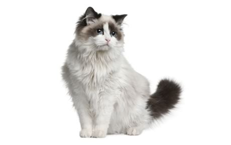
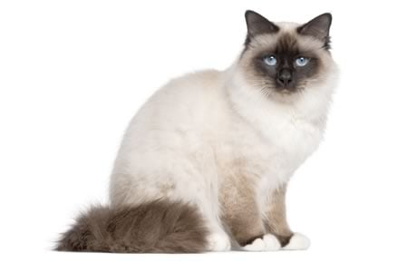
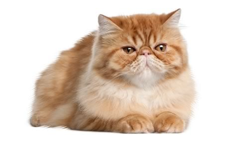

| Picture |
Name & Description |
 |
The Chartreux is comparable to a mime in that it is silent but communicative and occasionally silly. |
 |
The British Shorthair cat is a low-maintenance companion that conveys British reserve and has a soft voice. |
 |
AÂ Scottish Fold, so called because of their folded ears, enjoys more than being around and taking part in whatever their group is doing. |
 |
Native to New England, the Maine Coon is from Maine, where they were well-liked mousers, farm cats, and probably ship's cats, at least as far back as the early 19th century. |
|  |
Ragdoll cats learn quickly and can pick up tricks as well as desirable behaviors, like using a scratching post, with the use of positive reinforcement. |
|  |
The Birman uses a soft voice to communicate, mainly to remind you that dinner may be ready or that you might enjoy a nice cuddle on the couch. |
 |
The chic Siamese cat appears to be ready for a sophisticated masquerade ball in pale evening wear, stylish black accessories, and tanzanite-blue eyes. |
 |
Given that the Cornish Rex is a willing retriever of toys thrown at him, it might be appropriate to refer to him as "doglike" if it weren't offensive. |
 |
Sproing! Although it's not the typical response we anticipate when petting a cat, the American Wirehair's charm and good looks are inextricably linked to his springy, resilient coat. |
|  |
The dignified and docile Persian cat is known for being quiet and sweet. |